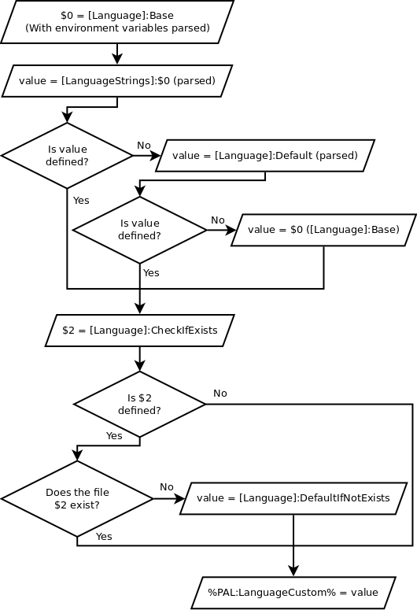

The PortableApps.com Launcher supports automatic language switching of applications when launched from the PortableApps.com Platform, by a series of environment variables. This document discusses how to go about getting language setting working for your application, and some quirks of the system.
Language variables covers the default variables which are available. If those environment variables are enough for use in a [FileWriteN] section, then you shouldn’t need to go beyond here.
Constructing a custom language environment variable is done with the [Language] and [LanguageStrings] sections, and the final result is placed in %PAL:LanguageCustom%. Here is the order in which things happen.
Note: normally you will want to use only one of [Language]:Default and [Language]:DefaultIfNotExists.
Here is a diagram of how it works:
When the portable application is not launched from the PortableApps.com Platform, to maintain the user’s language setting, the custom language should be read from a file with the aid of the [LanguageFile] section, if this is possible.
If you really can’t make language switching work as you need it to, you can write a custom segment to do what you need. Remember then that you will need to compile this new code with the PortableApps.com Launcher Generator. Also please try contacting Chris Morgan as any code you write or a new language situation may be useful for putting into the PortableApps.com Launcher itself.
Here is a table of language variables and the values they are given. (All the variables in this table have PortableApps.com prefixed to them, see Language variables for the full names.)
Note: PortableApps.comLocaleName will be in uppercase for users of the PortableApps.com Platform 2.0 Beta 5 and earlier. If this matters, you may need to use the [LanguageStrings] section.
| LocaleName | LanguageCode | LocaleCode2 | LocaleCode3 | Localeglibc | LocaleID | LocaleWinName |
|---|---|---|---|---|---|---|
| Afrikaans | af | af | afr | af | 1078 | LANG_AFRIKAANS |
| Albanian | sq | sq | sqi | sq | 1052 | LANG_ALBANIAN |
| Arabic | ar-sa | ar | ara | ar | 1025 | LANG_ARABIC |
| Basque | eu | eu | eus | eu | 1069 | LANG_BASQUE |
| Belarussian | be | be | bel | be | 1059 | LANG_BELARUSSIAN |
| Bulgarian | bg | bg | bul | bg | 1026 | LANG_BULGARIAN |
| Catalan | ca | ca | cat | ca | 1027 | LANG_CATALAN |
| SimpChinese | zh-cn | zh | zho | zh_CN | 2052 | LANG_SIMPCHINESE |
| TradChinese | zh-tw | zh | zho | zh_TW | 1028 | LANG_TRADCHINESE |
| Croatian | hr | hr | hrv | hr | 1050 | LANG_CROATIAN |
| Czech | cs | cs | ces | cs | 1029 | LANG_CZECH |
| Danish | da | da | dan | da | 1030 | LANG_DANISH |
| Dutch | nl | nl | nld | nl | 1043 | LANG_DUTCH |
| English | en | en | eng | en_US | 1033 | LANG_ENGLISH |
| Estonian | et | et | est | et | 1061 | LANG_ESTONIAN |
| Farsi | fa | fa | fas | fa | 1065 | LANG_FARSI |
| Filipino | tl | tl | fil | tl | 1124 | LANG_FILIPINO |
| Finnish | fi | fi | fin | fi | 1035 | LANG_FINNISH |
| French | fr | fr | fra | fr | 1036 | LANG_FRENCH |
| Galician | gl | gl | glg | gl | 1110 | LANG_GALICIAN |
| German | de | de | ger | de | 1031 | LANG_GERMAN |
| Greek | el | el | ell | el | 1032 | LANG_GREEK |
| Hebrew | he | he | heb | he | 1037 | LANG_HEBREW |
| Hungarian | hu | hu | hun | hu | 1038 | LANG_HUNGARIAN |
| Indonesian | id | id | ina | id | 1057 | LANG_INDONESIAN |
| Irish | ga | ga | gle | ga | 2108 | LANG_IRISH |
| Italian | it | it | ita | it | 1040 | LANG_ITALIAN |
| Japanese | ja | ja | jpn | ja | 1041 | LANG_JAPANESE |
| Korean | ko | ko | kor | ko | 1042 | LANG_KOREAN |
| Latvian | lv | lv | lav | lv | 1062 | LANG_LATVIAN |
| Lithuanian | lt | lt | lit | lt | 1063 | LANG_LITHUANIAN |
| Luxembourgish | lb | lb | ltz | lb | 1033 | LANG_LUXEMBOURGISH |
| Macedonian | mk | mk | mkd | mk | 1071 | LANG_MACEDONIAN |
| Malay | ms | ms | msa | ms | 1086 | LANG_MALAY |
| Norwegian | no | no | nor | nb | 1044 | LANG_NORWEGIAN |
| Polish | pl | pl | pol | pl | 1045 | LANG_POLISH |
| Portuguese | pt | pt | por | pt | 2070 | LANG_PORTUGUESE |
| PortugueseBR | pt-br | pt | por | pt_BR | 1046 | LANG_PORTUGUESEBR |
| Romanian | ro | ro | ron | ro | 1048 | LANG_ROMANIAN |
| Russian | ru | ru | rus | ru | 1049 | LANG_RUSSIAN |
| Serbian | sr | sr | srp | sr_RS | 3098 | LANG_SERBIAN |
| SerbianLatin | sr | sr | srp | sr | 2074 | LANG_SERBIANLATIN |
| Slovak | sk | sk | slk | sk | 1051 | LANG_SLOVAK |
| Slovenian | sl | sl | slv | sl | 1060 | LANG_SLOVENIAN |
| Spanish | es | es | spa | es | 1034 | LANG_SPANISH |
| SpanishInternational | es-mx | es | spa | es | 3082 | LANG_SPANISHINTERNATIONAL |
| Sundanese | su | su | sun | su | 9999 | LANG_SUNDANESE |
| Swedish | sv | sv | swe | sv | 1053 | LANG_SWEDISH |
| Thai | th | th | tha | th | 1054 | LANG_THAI |
| Turkish | tr | tr | tur | tr | 1055 | LANG_TURKISH |
| Ukrainian | uk | uk | ukr | uk | 1058 | LANG_UKRAINIAN |
| Vietnamese | vi | vi | vie | vi | 1066 | LANG_VIETNAMESE |
Enter search terms or a module, class or function name.